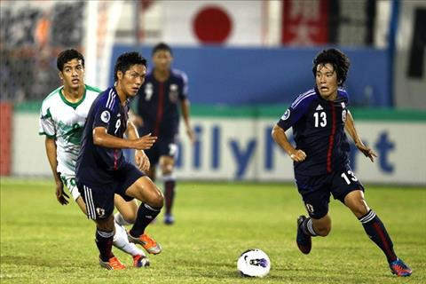

Nhận định U19 Nhật Bản vs U19 Iraq 16h00 ngày 25/10 (VCK U19 châu Á 2018)
Bóng đá 24h
Điều gì khiến bản hợp đồng đắt giá, học trò cưng của huấn luyện viên Mourinho tịt ngòi 8 trận liên tiếp trong vòng hơn 1 tháng vừa qua?Tính cả cuộc tiếp đón Juventus ở vòng bảng Champions League, Romelu Lukaku đã tịt ngòi 8 trận liên tiếp trên mọi đấu trường. Phong độ tệ hại, nhưng tiền đạo người Bỉ vẫn chắc suất đá chính trong đội hình của Jose Mourinho do trong tay ông không còn trung phong cắm nào tốt hơn.
Ở màn đọ sức với nhà đương kim vô địch Serie A, Lukaku gần như mất hút. Tiền đạo trị giá 70 triệu bảng của MU phải chờ đến quãng thời gian cuối hiệp đấu thứ 2 mới có thể tung ra cú sút đi vọt xà khung thành đội khách.
Hình ảnh "sát thủ" cao lớn, nhanh nhẹn trong màu áo Everton đã không còn. Thay vào đó là Lukaku mờ nhạt cùng khả năng dứt điểm tệ hại trước những cơ hội tưởng chừng không thể bỏ lỡ.
Nhiều cổ động viên (CĐV) phát hiện ra rằng Lukaku tăng cân chóng mặt kể từ khi đầu quân cho Man Utd. Nhìn bằng mắt thường cũng có thể nhận ra cơ thể của tiền đạo sinh năm 1993 đậm hơn nhiều so với khi còn khoác áo CLB chủ sân Goodison.
Lukaku 4 năm trước và Lukaku hiện tại. Anh ta tăng cường quá nhiều cơ bắp. Điều này không giúp ích gì cho một cầu thủ ở vị trí tiền đạo," CĐV Imran nhận xét.
"Lukaku 4 năm trước và Lukaku hiện tại. Anh ta tăng cường quá nhiều cơ bắp. Điều này không giúp ích gì cho một cầu thủ ở vị trí tiền đạo," CĐV Imran nhận xét.

Lần cuối cùng Lukaku ghi bàn cho MU tại Premier League đã diễn ra cách đây hơn 1 tháng. Đó là trận thắng 2-1 của "Quỷ đỏ" trước Watford diễn ra vào ngày 15/9.
Bóng đá 24h
Dường như với các cầu thủ Real Madrid như Toni Kroos, việc nhắc tới Cristiano Ronaldo đang là điều cấm kỵ.Sau khi chia tay Ronaldo trong mùa Hè vừa qua, Real Madrid lập tức đối mặt với một cơn khủng hoảng rất lớn trong mùa giải năm nay. Sau 9 vòng đấu tại La Liga mùa này, Los Blacos chỉ mới giành được 14 điểm.
Kroos và nhiều cầu thủ khác tại Real không muốn nhắc tới Ronaldo.
Vì điều này, truyền thông đã liên tục đặt câu hỏi liệu rằng Los Blancos có đang nhớ Real hay không. Tuy nhiên những câu hỏi này đang khiến các ngôi sao của Real rất khó chịu. Cụ thể sau khi Isco tuyên bố: Isco: 'Chúng tôi không thể khóc vì một người đã đi', thì đến lượt Kroos phát biểu rằng:
"Chúng tôi đã khởi đầu mùa giải năm nay rất tốt, và từng có được những trận đấu ghi tới 3-4 bàn. Khi đó chẳng ai nói gì về việc nhớ anh ta (Ronaldo) cả."
"Thật chẳng có ý nghĩa gì khi nói về một cầu thủ không còn ở đây. Anh ta là một cầu thủ tuyệt vời, có thể là một trong những cầu thủ quan trọng nhất trong lịch sử của đội bóng, nhưng điều đó chẳng thể giúp ích được gì cho chúng tôi bây giờ."
Video tài năng của Ronaldo:
Bóng đá 24h
Nhận định Sporting Lisbon vs Arsenal (23h55 ngày 25/10): Phá dớp lịch sử?Màn đối đầu giữa Sporting Lisbon vs Arsenal được đánh giá sẽ định đoạt ngôi đầu bảng E tại Europa League 2018 khi cả hai đội đều có trình độ hơn hẳn những đội bóng còn lại.
Quyết chiến vì ngôi đầuSau hai trận, Sporting Lisbon và Arsenal đều giữ thành tích toàn thắng. Arsenal ghi 7 bàn vào lưới Vorskla và Qarabag, trong khi Sporting Lisbon cũng ghi mỗi trận hai bàn vào lưới đối thủ. Cũng vì trình độ hơn hẳn so với các đối thủ còn lại của bảng đấu nên màn đối đầu trực tiếp giữa hai đội sẽ mang tính định đoạt ngôi đầu bảng F.
Nhận định Sporting Lisbon vs Arsenal - trận chiến vì ngôi đầu
Sporting Lisbon có nhiều điều kiện thuận lợi hơn để bung sức nhằm giành kết quả có lợi trong trận đấu này. Họ được thi đấu trên sân nhà và trong trận đấu với Boavista tại giải đấu trong nước, họ cũng được đá trên sân nhà nên không hề e ngại vấn đề hao mòn thể lực vì di chuyển.
Trong khi đó, Arsenal sẽ phải đến Bồ Đào Nha, sau đó tiếp tục làm khách của Crystal Palace cuối tuần này tại Premier League. Mặt trận Europa League trên thực tế không hẳn là ưu tiên của "pháo thủ" mùa này, bởi chính HLV Unai Emery từ đầu mùa đã khẳng định Arsenal ưu tiên cho cuộc đua tại Premier League hơn bất cứ giải đấu nào.
Trên thực tế dù được thi đấu trên sân nhà nhưng Sporting Lisbon vẫn ở thế "cửa dưới" so với Arsenal. Thầy trò Unai Emery hiện đang có phong độ ấn tượng với 10 trận toàn thắng ở mọi mặt trận. Kết quả của trận đấu sẽ phụ thuộc lớn vào quyết tâm của chính Arsenal
Thước đo quyết tâm
Trước trận đấu với Soporting Lisbon, HLV Unai Emery khẳng định Arsenal rất muốn giành chiến thắng trong trận đấu này: "Với chúng tôi, giải đấu này cũng rất quan trọng. Chúng tôi muốn đứng đầu bảng. Đây là trận đấu quan trọng để giúp củng cố sự tự tin của chúng tôi".
HLV Emery muốn đánh bại Sporting Lisbon để củng cố sự tự tin của các cầu thủ Arsenal
Với tuyên bố cứng rắn đó, nhiều khả năng Arsenal sẽ bung sức trong trận đấu này nhằm giành chiến thắng ngay trên sân khách. Trong bảy trận đấu tiếp theo ở mọi đấu trường, "pháo thủ" chỉ có duy nhất một trận đấy căng gặp Liverpool, các đối thủ còn lại đều bị đánh giá không ngang tầm với "pháo thủ" nên thầy trò Unai Emery không cần quá lo lắng về chặng đường phía trước.
Cũng như nhận định của HLV Emery, Arsenal rất cần củng cố lòng tin sau nhiều năm thi đấu thất vọng. Arsenal có thể không cần tung ra lực lượng mạnh nhất nhưng với lực lượng có chiều sâu, HLV Emery vẫn có đủ lựa chọn cho trận đấu này. Trên hàng công, Aubameyang nhiều khả năng được HLV Emery tiếp tục tin tưởng sau cú đúp vào lưới Leicester, trong khi Lacazette được nghỉ ngơi cho trận đấu vào cuối tuần.
Sporting Lisbon dù bị đánh giá thấp hơn nhưng vẫn là một đối thủ đáng gờm, đặc biệt ở những tình huống tấn công biên với đôi cánh Nani - Carlos Mane. Điểm mạnh của đội bóng Bồ Đào Nha là sở hữu cặp trung vệ giàu kinh nghiệm thi đấu Jeremy Mathieu - Sebastian Coates, những người đã có kinh nghiệm thi đấu tại mặt trận châu lục trong màu áo các đội bóng lớn.
Arsenal chưa từng giành chiến thắng khi tới làm khách tại Bồ Đào Nha. Liệu thầy trò Unai Emery có phá dớp?
Thống kê trước trận:
* Đây là lần đầu tiên hai đội gặp nhau kể từ mùa giải 1969-70 khi chạm trán ở vòng hai Inter-Cities Fairs Cup. Sporting khi đó hòa 0-0 trên sân nhà nhưng thua 0-3 trên sân của Arsenal.
* Arsenal chưa bao giờ thắng các đội bóng Bồ Đào Nha trên sân khách (hòa 3, thua 3).
* Sporting giành chiến thắng trong ba trận gần nhất tại Europa League, chuỗi thành tích tốt nhất kể từ tháng 10/2011.
* Unai Emery chỉ thua 1 trong 20 trận vòng bảng tại Europa League (thắng 11, hòa 8) khi dẫn dắt Valencia, Sevilla và Arsenal.
* Sáu cầu thủ khác nhau đã ghi bàn cho Arsenal tại Europa League mùa này (7 bàn) gồm Aubameyang, Ozil, Guendouzi, Smith-Rowe, Sokratis và Welbeck.
Đội Hình ra sân
Bóng đá 24h
Nhận định U19 Nhật Bản vs U19 Iraq 16h00 ngày 25/10 (VCK U19 châu Á 2018)U19 Nhật Bản vs U19 Iraq lúc 16h00 ngày 25/10 (Bảng B VCK U19 châu Á 2018): Nhận định bóng đá, ý kiến chuyên gia, dự đoán kết quả, phân tích chuyên môn, các thông tin, thống kê bên lề trước trận đấu.
U19 Nhật Bản vs U19 Iraq
Sau 2 lượt trận, U19 Nhật Bản toàn thắng để độc chiếm ngôi đầu bảng và sớm giành vé vào vòng tứ kết. Rõ ràng, nhà ĐKVĐ vẫn chứng minh được đẳng cấp của mình. N
Loạt trận cuối này hoàn toàn mang ý nghĩa thủ tục với U19 Nhật Bản. Họ hiện hơn U19 Triều Tiên 3 điểm và thắng trận đối đầu trực tiếp. Vì thế, ngay cả khi bại trận, U19 Nhật Bản vẫn giữ được ngôi đầu bởi theo luật nếu hai đội bằng điểm thì chỉ số đối đầu trực tiếp sẽ được xét đến đầu tiên để phân thứ hạng. Chính vì thế, gần như chắc chắn BHL đội bóng sẽ tung dàn cầu thủ dự bị vào sân để các trụ cột được nghỉ ngơi dưỡng sức cho trận tứ kết.
Với U19 Iraq, đội bóng từng 5 lần vô địch châu Á (chỉ kém U19 Hàn Quốc và U19 Myanmar), nhưng lại đang đối diện với nguy cơ dừng chân ngay vòng bảng. Hiện tại U19 Iraq mới có 1 điểm, đứng thứ 3 trên BXH. Muốn vào tứ kết, U19 Iraq cần phải đánh bại U19 Nhật Bản và hy vọng ở trận đấu cùng giờ U19 Triều Tiên thua trận trước U19 Thái Lan.
Tất nhiên U19 Iraq tràn đầy quyết tâm nhưng trình độ của họ khó lòng so với U19 Nhật Bản, kể cả khi đối thủ chỉ tung đội dự bị. Đánh bại U19 Nhật Bản được xem là nhiệm vụ quá tầm, nhưng để giành điểm thì nằm trong khả năng của đội bóng Tây Á.
Bóng đá 24h
Nhận định AC Milan vs Betis 23h55 ngày 25/10 (Europa League 2018/19)AC Milan vs Betis lúc 23h55 ngày 25/10 (Bảng F Europa League/cúp C2 châu Âu 2018/19): Nhận định bóng đá, ý kiến chuyên gia, dự đoán kết quả, phân tích chuyên môn, các thông tin, thống kê bên lề trước trận đấu.
AC Milan vs Betis
Nhận định bóng đá AC Milan vs Betis: 3-1
Thất bại trong trận derby thành Milan cuối tuần qua chắc chắn sẽ ảnh hưởng không nhỏ tới tâm lý của AC Milan. Tuy nhiên, thầy trò HLV Gennaro Gattuso buộc phải đứng dậy sau cú ngã, để bước vào tranh tài ở đấu trường Europa League.Đối thủ của Rossoneri ở lượt trận thứ 3 bảng F Europa League 2018/2019 diễn ra vào đêm nay là Real Betis. Hiện tại, đội bóng đến từ Tây Ban Nha đang có 4 điểm/2 lượt trận, đứng ngay sau AC Milan với 2 điểm ít hơn.
Real Betis đã tiến bộ thấy rõ trong mấy năm trở lại đây. Và thành quả của đội bóng này chính là suất dự Europa League. Tuy nhiên, ở mùa giải năm nay, đội bóng này đang cho thấy sự chững lại.
Sau 9 trận đấu ở La Liga 2018/2019, thầy trò HLV Quique Setien đã thua tới 3 trận, đứng thứ 12 trên bảng xếp hạng. Trước khi bước vào tranh tài với AC Milan, đội bóng của Tây Ban Nha có chuỗi 2 trận thua liên tiếp.
Ở thời điểm hiện tại, nếu xét về chất lượng đội hình, danh tiếng và cả truyền thống, AC Milan đều ăn đứt Real Betis. Ngoài ra, thầy trò HLV Gennaro Gattuso còn được thi đấu trên sân nhà San Siro, nơi họ sẽ được hàng ngàn cổ động viên tiếp sức.
Tuy nhiên, AC Milan vẫn phải đề cao cảnh giác trước đại diện đến từ La Liga. Bởi lẽ, đoàn quân của HLV Quique Setien có thành tích thi đấu khá tốt ở sân chơi châu Âu. Thống kê chỉ ra rằng, Real Betis đang có 6 trận bất bại ở đấu trường Europa League. Ở vòng bảng Europa League mùa giải năm nay, câu lạc bộ này đã hòa Olympiacos 0-0 và đè bẹp Dudelange tới 3 bàn không gỡ.
Có thể thấy, AC Milan sẽ quyết tâm giành chiến thắng trước Real Betis để khẳng định vị thế của mình ở bảng F, qua đó hướng tới việc giành vé sớm. Nhưng, điểm yếu của họ là không duy trì được sự ổn định. Ở những thời khắc quyết định, đội bóng này vẫn chưa thiếu sự lì lợm và quyết đoán. Dẫn chứng cụ thể nhất chính là thất bại trước Inter Milan ở vòng 9 Serie A cuối tuần qua.
Ở cuộc đọ sức với Real Betis vào đêm nay, AC Milan được giới chuyên môn đánh giá cao hơn đại diện của La Liga. Với thực lực của mình, nếu chơi đúng sức thầy trò HLV Gennaro Gattuso sẽ được hưởng niềm vui thắng trận. Tuy nhiên, nếu không cải thiện được vấn đề tâm lý cũng như khả năng săn bàn thì nguy cơ Rossoneri đánh rơi điểm số hoặc trắng tay vẫn có thể xảy ra.
LỰC LƯỢNG - AC Milan: Vắng Ivan Strinic và Riccardo Montolivo vì chấn thương. - Real Betis: Cristian Tello, Andrés Guardado, Javi García và Joaquín để ngỏ khả năng ra sân.
PHONG ĐỘ VÀ ĐỐI ĐẦU - AC Milan thắng 3, hòa 1, thua 1 trong 5 trận gần nhất.
- Real Betis bất bại 6 trận cuối cùng ở Europa League.
- Ở lần đọ sức gần nhất, Real Betis thắng 2-1 trước AC Milan trong trận giao hữu.
CON SỐ
6 Betis đang có phong độ không tốt trên sân khách. 6 chuyến xa nhà gần đây, CLB Tây Ban Nha trải qua 4 trận chỉ biết hòa và thua, đồng thời có tới 3 trận không ghi bàn.
THÔNG TIN
Milan: Conti và Strinic chấn thương.
Betis: Guardado, Joaquin và Javi Garcia vắng mặt vì chấn thương.
Theo kèo châu Á, Milan thắng 3 và thua 2 ở 5 trận gần đây; Betis thắng 3 và thua 2 ở 5 trận vừa qua.
Theo kèo châu Á, Milan thắng 5 và thua 1 ở 6 trận sân nhà gần đây; Betis thắng 3, hòa 2 và thua 1 ở 6 trận sân khách vừa qua.
ĐẶC BIỆT
Lưới rung hiệp 1: Cả 8 trận sân nhà gần đây của Milan đều có tối thiểu 1 bàn trong hiệp 1. Việc Betis và Milan đều đang đặt mục tiêu chiến thắng cũng sẽ khiến trận đấu diễn ra sôi động và có bàn thắng sớm.